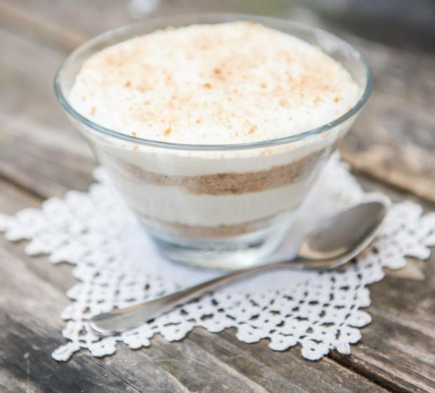

Serradura

Recipe description
Simple and very fast to do, your kids and you and everyone you know will love it and it can even be done
with any type of cookies
Ingredients
- 1 pacote de bolacha maria
- 2 embalagens de Natas LONGA VIDA
- 1 lata de Leite Condensado Tradicional NESTLÉ
Steps
- Triture as bolachas e reserve.
- Bata as natas até ficarem cremosas e reserve uma parte para a cobertura.
Ao restante adicione o Leite Condensado Tradicional e mexa bem.
- Numa taça, coloque alguma bolacha Maria triturada. Cubra com creme de
Leite Condensado. Repita a operação até terminar o creme.
- Por fim, cubra com as natas que reservou e polvilhe com bolacha Maria ralada.
Leve ao frio até ficar consistente.
Voltar ao Index